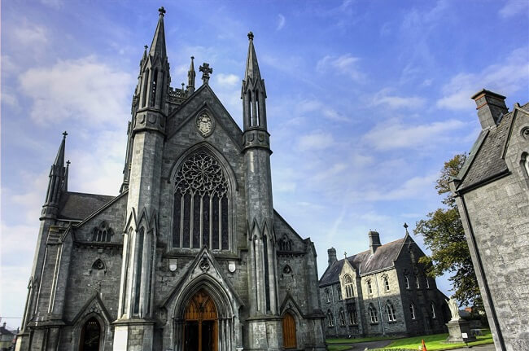

morly旅游圈
爱尔兰（爱尔兰语：Poblacht na hÉireann；英语：Republic of Ireland）， 是一个西欧的议会共和制国家，西临大西洋，东靠爱尔兰海，与英国隔海相望，是北美通向欧洲的通道，爱尔兰自然环境保持得相当好，素有“翡翠岛国”之称，全国绿树成荫，河流纵横。 它的大学教育非常成熟，首都都柏林自中世纪起就被誉为大学城。国内气候温和，各地的气温相对均衡。5~6月份是一年中阳光最充足的时期，比较适宜旅行。因全国草地遍布，所以又有“绿岛”和“绿宝石”“翡翠岛国"之称。
爱尔兰人属于凯尔特人，是欧洲大陆第一代居民的子嗣，爱尔兰于1922年从英国殖民统治下独立出来，后成为永久中立国.爱尔兰位于欧洲西部爱尔兰岛的中南部，西濒大西洋，东北与英国的北爱尔兰接壤，东隔爱尔兰海与英国相望，地理坐标为北纬53度/西经8度。 领土面积为70280平方公里，其中土地面积68890平方公里，水域面积1390平方公里。海岸线长3169公里。
爱尔兰有哪些值得去的地方呢，接下来跟着我一起游韩国吧
No.1 巨人堤
巨人堤（Giant's Causeway）位于北爱尔兰贝尔法斯特西北的大西洋海岸，这条由数万根大小均匀的玄武岩石柱聚集成的绵延数千米的堤道是世界十五大最奇妙地貌现象之一，它也是爱尔兰岛上当之无愧的第一景点。
巨人堤这个名字的来源于爱尔兰的一段民间传说。据说这是传说中爱尔兰伟大的英雄芬恩·麦克库尔（英文写法为Finn Mac Cool，著名的芬尼亚神话战士团，费奥纳骑士团的首领，传说他们在公元3世纪非常活跃）为了应对苏格兰巨人的挑战而修建了此堤道，苏格兰巨人进攻时，其巨大的块头超出了芬恩·麦克库尔的预料，此时他的妻子心生一计——让他装成自己的婴孩，
让苏格兰巨人以为芬恩·麦克库尔的婴孩都如此之大，那芬恩一定更加魁梧，于是主动撤退，为了防止追兵，苏格兰巨人梯段了堤道，剩下了今天的巨人之路 。
【地点】北爱尔兰贝尔法斯特西北约80公里处大西洋海岸
No.2 香侬河
香浓河（River Shannon）是全爱尔兰最长的河流，自古以来就是重要的水道，全长约四百公里，几乎贯穿了整个爱尔兰岛。香侬河源于爱尔兰西北部奎尔卡山西麓，此后蜿蜒起伏于丘陵之间向南流经中部平原，至爱尔兰西南部港口城市利默尼里克入海。 香侬河沿途有众多特别的风光，而这些风光，无论是人文或自然都与水有着不可分割的联系。
特别推荐的是毗邻大西洋的高威这里的湖、河、桥与中世纪风格的建筑互相映衬，被称为“西部的威尼斯”。入海口小镇香浓也从是一个重要的旅游胜地。这儿经常举行别具一格的中世纪古堡聚会，主人打扮成骑士模样，女侍则身着传统的细腰拖地长裙等华服为客人们服务并表演民族歌舞。一年一度的香浓河赛船大会更是游客们饱览香浓河的大好时机。
【地址】爱尔兰不列颠群岛
No.3 都柏林城堡
都柏林城堡（Dublin Castle） 是都柏林全市最古老建筑之一，它由英格兰约翰王于1204年8月30日下令建造，最初以盛放国王的金银珠宝之用。 都柏林城堡呈长方形，四角由四座培堡组成，其建筑风格和规模在建成之初堪称欧洲之最，周围都是高高的围墙，正门有吊桥，是中世纪都柏林的"城中城”。
都柏林城堡在历史上长期是英国对爱尔兰进行统治的权力机构所在地，装修华贵考究的圣帕特里克厅（宴会厅）、大会客厅、王座厅等一度是英王驻爱尔兰总督的主要活动场所。都柏林城堡是爱尔兰最重要的国事活动场所，总统就职典礼、欢迎外国元首或政府首脑的国宴等均在此举行。
历史上的都柏林城堡曾因1684年的大火而被毁之过半。现存的都柏林城堡大半都是建于18世纪，在长达百年的国家独立运动中，都柏林城堡因为英格兰人的进驻， 而多次经受了民族解放浪潮的冲刷与洗礼。在国家独立后，都柏林城堡则成为了国家独立的历史见证人。
【地址】DublinCastle,DameStreet,Dublin2。步行:从圣三一学院步行五分钟到达。
No.4 爱尔兰大饥荒博物馆
爱尔兰大饥荒发生于1845年至1852年间。造成饥荒的主要因素是一种称为晚疫病（Phytophthora infestans）的卵菌造成了马铃薯腐烂，而马铃薯则是当时的爱尔兰人的主要粮食来源。
饥荒期间，爱尔兰属于英国政府统治时期，但英国政府提供帮助却少之又少：这时期英国仍从美洲进口大量粮产，一部分粮食甚至经由爱尔兰的港口转运，但饥饿的爱尔兰人却无力负担这些粮食，最终造成高比例的爱尔兰人饿死。大饥荒的7年间，英国统治下的爱尔兰人口锐减了近四分之一；除饿死、病死者之外，因饥荒而移居海外的人口约一百万。
这次灾害与其它社会与经济因素严重地打击了贫苦农民的生计。灾荒对爱尔兰的社会、文化、人口产生了深远的影响。
【地址】Strokestown距都柏林144公里（90英里），距朗福镇23公里（14英里）（所有的公交路线都会经过这里。）
【门票】无
内容整理至网络，如有侵权，请联系我们！1255394075@qq.com
